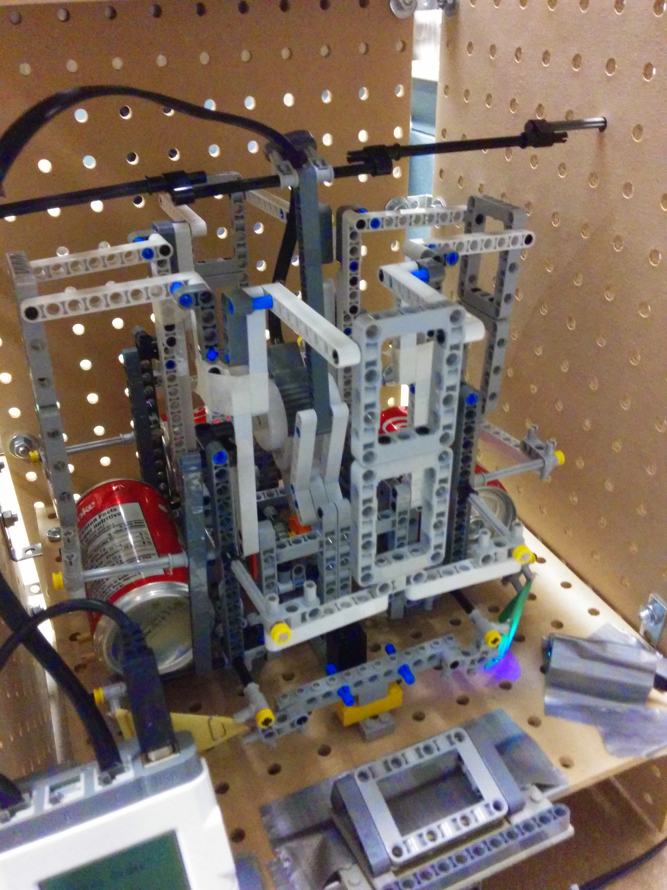

Platform
This project was built entirely in MATLAB.
What it is
- An audio file is made up of many different frequencies, from 20Hz to 20000Hz (Range of human hearing)
- This application displays the relative presence of each of these frequencies in an audio sample, in the form of a bar graph
- The graph is updated every XXXXms, and animates as the audio sample is playing
How it works
- The bands of frequencies to analyze are defined by the user. For the best display, the range of each band should be exponentially larger than the last. This is because the human ear perceives lower frequencies to be louder than higher ones.
- The audio sample is run through a band pass filter of each of the bands. What this does is add gain to the frequencies within the band, and attenuates frequencies outside the band. This is done by creating a transfer function to represent each band, and doing a lot of math stuff with it.
- Doing this will give a new audio sample for each of the bands that were specified. If you were to listen to them, the lower frequency audio samples would only have the bass-y sounds, and the higher frequency samples would have the hi-hats and all other high frequncy sounds.
- Each audio sample is analyzed every XXms. Over this time period, the root-mean-squared average (getting the regular average of the sample would give us zero since its a sinusoidal wave. This average gives us the 'energy' of the wave so we can get a good idea of the amplitude over the interval) is calculated
- The average values for each band are compared and scaled between 0 and 1 relative to each other.
- The audio file plays and uses the scaled values to draw a bar graph of each of the bands.
The code is avaliable on my github, here.
Additional pictures/video
Front.
Bottom.